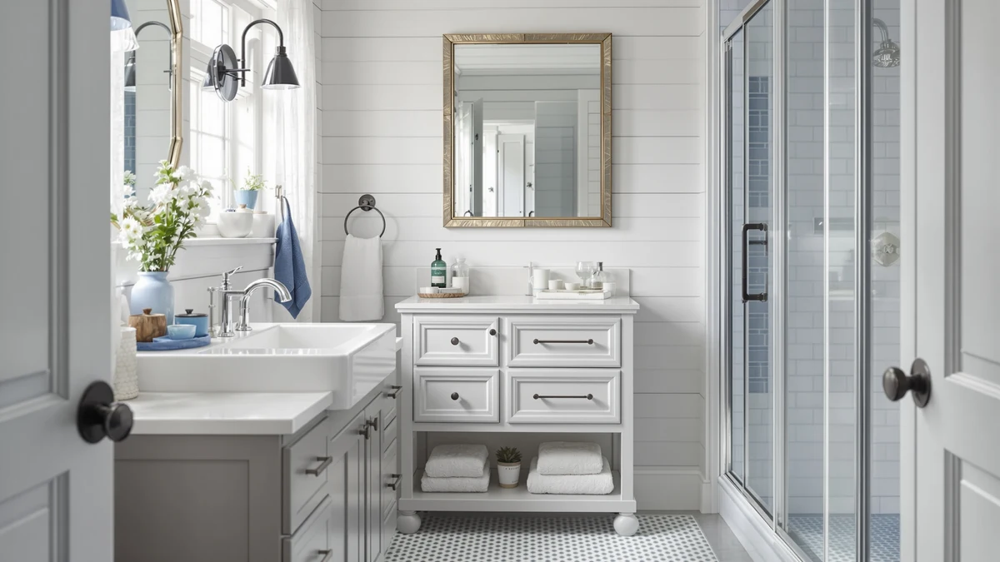

The Best Under-sink Organizers For small bathrooms (2026)
Prices and picks verified as of August 2026. Independent, reader-supported reviews.


Quick Answer
The Vtopmart 4 Pack Small Clear is the best under-sink organizer for small bathrooms because its four compact, see-through bins fit a tight cabinet without wasting space on a single bulky unit. At $21.99 it costs less than the tiered carts in this lineup while still letting you spot what's inside each bin without pulling it out.
Our pick: Vtopmart 4 Pack Small Clear — $21.99 Check Price on Amazon
Bottom line: our top pick is the Vtopmart 4 Pack Small Clear Stackable Storage Drawers at $20.98. The best budget option is the Bathroom Counter Organizer and Storage at $12.99.
Things to Know Before You Buy
- Small footprint beats total capacity. The best under-sink organizers for small bathrooms trade a wide flat shelf for a narrow bin, a stackable set, or a slim adhesive rack that fits between the pipes instead of over them.
- Price runs from $9.99 to $30.35. A single small bin like the Homtalker sits at the bottom of that range, while a four-tier cart like the YFXCVSL costs more but packs 23 quarts of capacity into one footprint.
- Clear bins let you skip the guesswork. Three of our picks use clear or semi-clear plastic, so you can see what's inside without pulling every bin out of a cramped cabinet.
- Adhesive mounts skip drilling. The Zeawec rack sticks to a wall or cabinet door, which matters if you're renting or would rather not add new holes to the cabinet.
- Ratings cluster around 4 stars. That's typical for this category, and we call out the specific complaints, like adhesive strength or bin count, in each review below.
The best under-sink organizers for small bathrooms solve a problem that generic storage bins ignore: there simply isn't much room to work with. A standard vanity cabinet under a small bathroom sink might give you 20 inches of width and a shutoff valve or trap eating up the middle of it, so a wide flat shelf built for a kitchen cabinet does not fit. The right organizer works with that limited footprint instead of against it, using a narrow bin, a stackable set, or a slim adhesive rack that clears the plumbing.
We compared seven organizers built for exactly this kind of cabinet, priced from $9.99 to $30.35, looking at how much floor space each one needs, how much it holds, and how well it fits a cabinet that's tighter than average. The Vtopmart 4 Pack Small Clear is our top pick, because its four compact bins split storage into manageable, see-through sections that fit almost any small cabinet without crowding the door.
If you want a mountable option that skips floor space entirely, the Zeawec 8 Pack Adhesive Rustproof sticks to a cabinet door or wall for $16.99. Buyers who need to fit a full set of supplies into one narrow footprint should look at the YFXCVSL 4 Tier Plastic Storage below. For more on organizing this space, see our guide to under-sink bathroom organizers and our tips for organizing under-sink storage. We explain how we picked, how we compared, and where each organizer falls short next.
Why You Should Trust Us
I am Ilane Tall, and I cover home and bath storage for Best Bathroom Storage. I have spent years comparing under-sink organizers, cabinets, and small-space storage across every price tier, reading spec sheets, checking real dimensions against a standard small-bathroom vanity, and tracking what buyers say once an organizer has lived under their sink for months.
This guide isn't built around the biggest or most feature-packed option. When you're picking the best under-sink organizers for small bathrooms, the priority is fit, not flash. Every pick here is one we would put under a compact, real-world small cabinet, and we name the drawbacks next to the strengths so you can weigh the trade-offs yourself.
How We Picked
We started with a wide field of under-sink storage products, then narrowed it to seven that make sense for a small bathroom cabinet rather than a spacious kitchen one. A few rules guided the cut.
The organizer had to work in a compact footprint, so we favored narrow bins, stackable sets, and mountable racks over wide flat shelves that assume more width than a small cabinet actually has. We also looked for options that let you see or reach contents easily, since a cramped cabinet punishes anything you have to dig through. And the price had to make sense across budgets, from the $9.99 Homtalker single bin to the $30.35 YFXCVSL four-tier cart, so shoppers across that range have an option. Organizers with a pattern of complaints about fit or durability did not make the list.
How We Compared
To judge each under-sink organizer for small bathrooms, we worked through the same checklist for every model. We started with the footprint each one needs, measuring width and depth against a standard small-bathroom vanity cabinet rather than a full-size one.
We then looked at how each organizer handles the items that actually live under a small bathroom sink, extra rolls, travel-size bottles, and cleaning spray, checking whether the bins, tiers, or racks kept those items sorted or let them slide into a jumble. We compared verified owner reviews for recurring complaints about adhesive strength, bin durability, or assembly, and we weighed all of it against the price, so a low sticker alone never earned an organizer a spot on the list.
Our Picks

Vtopmart 4 Pack Small Clear
What we like
- Four separate bins keep items grouped instead of piled in one open space
- Clear plastic sides let you spot what's inside at a glance
- Each bin measures a compact 7.5 by 6 by 4.4 inches, sized for a tight cabinet
- Mid-range price for a labeled, multi-bin set
Flaws but not dealbreakers
- Four bins fill up fast in a cabinet that holds a lot of backstock
- No internal dividers, so small items can still shift around inside each bin
| Material | Metal / wood |
| Size | 7.5"D x 6"W x 4.4"H |
The Vtopmart 4 Pack Small Clear earns the top spot among the best under-sink organizers for small bathrooms because it splits storage into four separate, see-through bins instead of one open shelf you have to dig through. At $21.99, each bin measures 7.5 by 6 by 4.4 inches, small enough to slide into the narrow gaps a small bathroom cabinet actually has, on either side of the trap or stacked against the back wall.
Because the bins are clear, you can tell what's inside without lifting the lid or pulling anything out, which matters when the cabinet is too shallow to open fully. The trade-off is capacity. Four bins this size won't hold a full stockpile of backup supplies, so if your household goes through cleaning products fast, pair this set with a taller organizer like the YFXCVSL below.

Zeawec 8 Pack Adhesive Rustproof
What we like
- Adhesive mount skips drilling into a cabinet door or wall
- Rustproof coating suits the damp conditions under a bathroom sink
- Eight-piece set covers more surface area than a single rack
- Lowest price among the mountable picks in this lineup
Flaws but not dealbreakers
- Adhesive strength depends on how clean and dry the surface is before you stick it on
- Not a place for your heaviest bottles, since the mount can loosen under a lot of weight
| Material | Metal / wood |
| Size | — |
The Zeawec 8 Pack Adhesive Rustproof takes a different approach to the same small-cabinet problem. Instead of adding a bin that takes up floor space, it mounts to the inside of a cabinet door or a side wall. At $16.99 for eight pieces, it's the least expensive way in this lineup to add storage without giving up any of the limited floor area under the sink.
The rustproof coating is a real advantage here, since the space under a bathroom sink stays damp more often than most other cabinets in the house. Owners report the adhesive holds up well for lighter items, but we would stick to travel bottles, sponges, and small tools rather than anything heavy, since an overloaded adhesive mount is the most common way this kind of rack fails.

Bathroom Counter Organizer and Storage
What we like
- Lowest price of any pick in this roundup
- Simple single-bin design with no assembly required
- Easy to fit into whatever leftover space your other organizers do not use
Flaws but not dealbreakers
- One bin alone will not organize a full cabinet
- No stacking or tiering, so it works best paired with another product on this list
| Material | Metal / wood |
| Size | 1 Pack |
The Homtalker Bathroom Counter Organizer and Storage costs $9.99, less than any other pick here, and it's built to solve one small problem rather than reorganize the whole cabinet. It's a single bin, so you are not getting the sorting power of the multi-piece sets above, but it's an easy way to corral one category of items, extra soap, spare rolls, or cleaning cloths, for less than the price of a coffee run.
Because it is only one unit, we would treat this as a supplement to a bigger system rather than your only under-sink organizer. It fits well into whatever gap is left after you place a bin or tiered cart, and the low price makes it easy to add a second one later if you need more sorted storage.

YFXCVSL 4 Tier Plastic Storage
What we like
- Four tiers and 23 quarts of capacity in a single narrow footprint
- Works out to about $7.59 per tier, the most storage per dollar in this lineup
- Vertical design uses height instead of floor width, which suits a small cabinet
Flaws but not dealbreakers
- At $30.35, it costs more upfront than any single-bin option here
- Needs real vertical clearance, so measure the cabinet height before ordering
| Material | Metal / wood |
| Size | 4-Tier 23QT |
The YFXCVSL 4 Tier Plastic Storage costs $30.35, the highest sticker price in this roundup, but we still call it our budget pick because of what that price buys: four stacked tiers and 23 quarts of total capacity in one unit. Broken down per tier, that works out to about $7.59 per tier, which beats buying four separate bins at the going rate for this category.
The catch is clearance. A four-tier cart needs real vertical room to fit under the sink, so it suits a cabinet with a tall, empty column more than one with shelves already installed. If your small bathroom cabinet has the height for it, this is the way to consolidate the most storage into the smallest floor footprint on this list.

Vtopmart 25 PCS Clear Plastic
What we like
- 25 pieces let you sort items into much smaller categories than a standard bin set
- Clear plastic makes it easy to identify contents without opening each piece
- Priced under $18 for the full set
Flaws but not dealbreakers
- That many small pieces takes more time to set up and organize than a simple multi-bin set
- Individual pieces are small, so they suit accessories more than bulkier bathroom supplies
| Material | Metal / wood |
| Size | — |
The Vtopmart 25 PCS Clear Plastic set takes the opposite approach from a simple four-bin system. Instead of a few larger containers, you get 25 small, clear pieces for $17.98. That makes it a better fit for small bathrooms where the items you are storing are themselves small, hair ties, bobby pins, sample-size bottles, rather than full-size bottles of cleaner.
The trade-off is setup time. Sorting 25 pieces into a cabinet takes longer than dropping in a four-bin set, and you will want to group similar sizes together so the cabinet does not turn into its own puzzle. For a bathroom where small, loose items are the actual clutter problem, that extra sorting pays off.

Asayuee 360 Rotating Makeup Organizer
What we like
- 360-degree rotation brings back-of-cabinet items to the front without unloading the whole shelf
- Two-tier design adds vertical storage without much added footprint
- Priced under $17
Flaws but not dealbreakers
- The rotating base needs a bit of clearance around it to spin freely
- Not the highest-capacity option if you need to store bulkier items
| Material | Metal / wood |
| Size | 2 Tier |
The Asayuee 360 Rotating Makeup Organizer solves a specific annoyance with small under-sink cabinets: reaching whatever got pushed to the back. Its two-tier, rotating base costs $16.98 and lets you spin stored items to the front instead of pulling everything out to reach one bottle.
Because it needs room to rotate, it works best in a cabinet that is not already packed wall to wall, and it is better suited to smaller items like makeup, skincare, and travel bottles than bulky cleaning supplies. If reaching the back of your cabinet is the main frustration, this pick addresses that directly instead of adding more bins.

Delamu 2 Sets 2-Tier Clear
What we like
- Two full two-tier sets let you divide storage by category or by cabinet zone
- Stackable design adds capacity without widening the footprint
- Clear construction makes contents visible at a glance
Flaws but not dealbreakers
- At $23.96, it costs more than single-set options in this lineup
- Two sets take up more total footprint than one, so measure before buying if your cabinet is especially tight
| Material | Metal / wood |
| Size | 2 Pack |
The Delamu 2 Sets 2-Tier Clear gives you two complete two-tier organizers for $23.96, which is useful if you want to separate storage into two distinct zones, daily essentials in one set, backup supplies in the other, rather than mixing everything into a single system.
Because you are getting two full sets, this pick uses more total floor space than a single organizer, so it fits best in a small bathroom cabinet that is narrow but reasonably deep, rather than one that is tight on every side. For buyers who specifically want that daily-versus-backstock split, it is a straightforward way to keep the two apart.
Quick Comparison
| Product | Material | Price | Rating | Best for | Get it |
|---|---|---|---|---|---|
| Vtopmart 4 Pack Small Clear | Metal / wood | $21.99 | 4 | Seeing contents at a glance in a small cabinet | View on Amazon → |
| Zeawec 8 Pack Adhesive Rustproof | Metal / wood | $16.99 | 4 | Mounted storage that skips floor space | View on Amazon → |
| Bathroom Counter Organizer and Storage | Metal / wood | $9.99 | 4 | One inexpensive bin for a single zone | View on Amazon → |
| YFXCVSL 4 Tier Plastic Storage | Metal / wood | $30.35 | 4 | Most storage capacity per dollar spent | View on Amazon → |
| Vtopmart 25 PCS Clear Plastic | Metal / wood | $17.98 | 4 | Sorting many small items into separate compartments | View on Amazon → |
| Asayuee 360 Rotating Makeup Organizer | Metal / wood | $16.98 | 4 | Reaching items stored toward the back | View on Amazon → |
| Delamu 2 Sets 2-Tier Clear | Metal / wood | $23.96 | 4 | Dividing storage into two zones | View on Amazon → |
What makes an organizer good for a small bathroom's under-sink cabinet?
The best under-sink organizers for small bathrooms use a narrow or stackable footprint instead of a wide flat shelf, so they fit a compact cabinet without blocking the door or crowding the pipes.
How much should I budget for an under-sink organizer?
Our picks run from $9.99 for a single small bin to $30.35 for a four-tier storage cart.
The Competition
We looked at more organizers than the seven that made this list of the best under-sink organizers for small bathrooms, and a few common types fell short for reasons worth naming.
Wide, full-size shelving units. Several organizers built for kitchen cabinets simply do not fit a small bathroom vanity. They photograph well next to a full-depth cabinet, but they hang over the edge or block the door in a compact bathroom, so we left them out.
Fixed shelves with no clearance for plumbing. A number of budget shelves assume an empty rectangular cabinet with no pipes or trap in the way. In a small bathroom, that plumbing usually sits closer to the front of the cabinet, so these shelves ended up propped against the pipes instead of sitting flat.
Oversized rolling carts. A few multi-tier carts we considered added wheels and a wider base for mobility, which only made sense in a larger cabinet. In a small bathroom, the extra width cost more usable space than the wheels were worth.
After weighing footprint, capacity, and price across all seven finalists, the Vtopmart 4 Pack Small Clear remains the best under-sink organizer for small bathrooms in this lineup, and it is the pick we would put in a compact cabinet first.